英文
英文伽莫夫
编者按
在这篇文章中，乔治·伽莫夫回顾了核结构理论的发展状况。随着中子的发现，现在物理学家认为稳定的原子核由质子和中子构成。正如伽莫夫指出的那样，海森堡的核结构理论认为小的原子核应该含有大体相等数量的两种粒子，但随着原子质量的增加平衡会被打破，中子的数目会变得更多，这会抵消质子间的静电斥力。伽莫夫认为当前的理论只能部分解释原子核相对α衰变和β衰变的稳定性。原子核半径与原子质量的立方根粗略成正比表明原子核的密度大致保持不变。 英文
当自发和人工的核转变的存在证明了原子核的复杂性时，一个很重要的问题出现了：不同的原子核是由哪些基本粒子组成的？这个问题似乎可以简单地回答，因为自命是基本粒子的只有两类：质子和电子。原子核的质量主要是由质子贡献的，而电子的引入是为了减少正电荷以便符合实验的观测值。例如，原子量209、原子序数83的铋原子核被认为是由209个质子和209 – 83=126个电子组成的。大家还认为这些基本粒子在原子核内构建某种由四个质子和两个电子组成的复合单元（α粒子）也是很有可能的。所有这些结构都与实验结果吻合得很好，因为我们确实在核转变的实验中观测到了所放出的电子、质子和α粒子。 英文
伽莫夫发展了一种理论，即原子核由α粒子、一些质子和一定数目的电子组成。虽然这个理论给出了一些有趣的结果，如原子核质量亏损曲线的一般形状和原子核发射α粒子的条件，但同时也遇到了严重的困难。根据电子的量子理论，我们难以理解电子如何能存在于原子核半径所限制的微小空间内。我们也不清楚原子核中电子的行为为何如此奇怪，且难以理解原子核的电子为何不会影响重核的粒子（质子和α粒子）的发射过程。 英文
约两年前，查德威克指出，实验证据使我们不得不承认存在一类新的粒子，即所谓的中子，它们在原子核结构中扮演了重要角色。中子的发现大大简化了原子核内有关电子的困难。现在我们可以假设原子核完全是由质子和中子组成的（例如，铋元素的原子核是由83个质子和209–83=126个中子组成），而质子和中子有时也可能结合成一个α粒子（两个质子和两个中子）。因此，可以这么说，上面提到的第一个困难被隐藏在中子内部，而实际上第二个困难这时已经被排除。 英文
根据这些新的思想，海森堡成功地建立了一个原子核结构的普遍理论，用来解释原子核稳定性的主要特征。他的理论基础是建立在某些关于质子和中子之间存在相互作用力的假设上的。看起来最合理且可接受的观点是，认为同类粒子之间的相互作用仅由电荷产生（即在两个中子之间不存在力的作用，而在两个质子之间通常有库仑排斥力），而在两类不同的粒子（中子和质子）之间有强的交换力起作用。这后一种力很可能与量子化学中起主要作用的原子间的作用力类同，可以认为是由相关的两个粒子之间电荷交换产生的。 英文
以上的假设立即解释了为何重元素原子核中的中子数远大于其质子数（即为何原子量与原子序数之比对较重元素而言是逐渐增大的）。实际上，如果我们忽略库仑力，原子核最稳定的状态将相应于质子数与中子数相等的情况，在这种情况下，质子与中子之间所有可能的结合方式（通过吸引的交换力）趋于饱和。但是，由于质子之间存在库仑排斥现象使得原子核偏离最佳状态朝向较小的质子数，这时，系统的最低势能状态将对应于较大比例的中子数。由于库仑力的重要性随着核电荷的增大而增加，这时人们可以理解只有对那些最轻的元素（元素周期表中的前10个元素），同等数目的中子和质子才是可能的；而对于较重的元素，其中子数在数量上就会占优势（如铋元素由126个中子和83个质子组成）。 英文
对交换力随距离变化的规律采用最简单的形式：
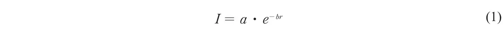
并应用量子统计方法，海森堡计算出了由n1个中子和n2个质子所构建的核模型的行为。结果是，在与粒子总数成正比的确定体积内，粒子的分布相当均匀。这项结果与从其他途径得到的结果是非常吻合的，即核内的密度分布相当均匀，且与原子量无太大关系。而以原子核总的结合能E作为n1和n2的函数得到的关系式似乎非常复杂，当然，E与交换力表达式（1）中的系数a和b的数值也是有关的。将这个公式与不同原子核的质量亏损的实验值进行对照，我们可以估算出a和b的值，得到的结果是：a = 4.05×10–5 erg，b = 1.25×1012 cm–1。 英文
从海森堡有关核稳定性问题的理论中，我们也能获得很有趣的结果。我们很容易理解具有高正电荷的原子核必然趋于发射出带正电的粒子。根据能量守恒的观点，对这类发射最有利的情况是发射一个α粒子，即从核中带走了大量的负能量（α粒子自身的结合能），这相当于给原子核提供了同样多的正能量。如果把α粒子的发射认为是从相关的核内同时减去两个中子和两个质子，则α粒子发射的可能性条件可以被简单地表述出来。显然，这类过程扣除所需的能量为
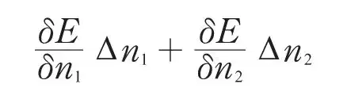
或，当∆n1 = ∆n2 = -2时，
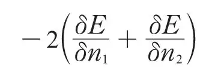
要使一个自发的α衰变成为可能，这个量必须小于上述由中子和质子形成α粒子时放出的结合能∆Mαc2。（两者的能量差将作为放出的粒子的动能。）因此，α衰变的条件是：
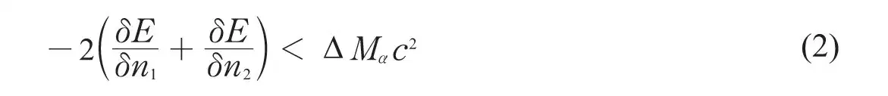
图1中画出了所有已知同位素的中子数和质子数的比值与其质子数的关系。根据公式（2）计算得到的α稳定性曲线用虚线（曲线I）表示，从中可以看到，它所处的位置非常低。然而我们注意到，不考虑绝对值的大小，理论曲线还是让我们对α稳定性的界限有了很好的了解。我们可能会注意到，质子的自发发射条件为：
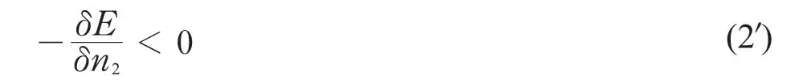
这里给出的发射质子的稳定性界限远离α稳定性曲线的右边，这意味着只有很重的带电核（原子序数大于200）才能发生自发的质子衰变。另一方面，对中子发射的条件：
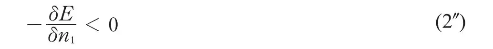
是永远不可能满足的，如果想到不带电荷的中子绝不被原子核排斥，我们将很容易理解这一点。 英文
现在我们必须将注意力转回到轻粒子发射的问题上来。根据核的中子–质子模型，我们必须采纳以下观点，即通常的β发射过程是由于核的中子以电子的形式释放出负电荷而转变为质子所引起的：
另一方面，约里奥夫妇最近发现了发射正电子的元素从而揭示了以上逆过程出现的可能性：
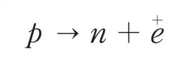
只要我们认为核电子的发射相当于从原子核内拿走一个中子同时加入一个质子，则我们很容易估计出这个过程的稳定性极限。这种转变的正能量守恒条件显然将是：
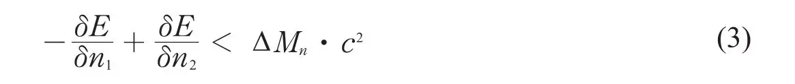
式中，∆Mn是一个质子和一个电子构成一个中子的质量亏损。通过严格类比，我们得到可能发射正电子的条件为：
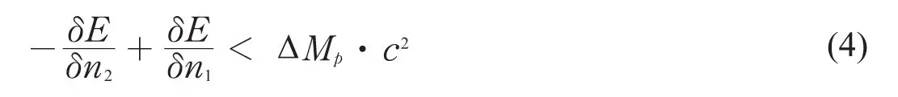
式中，∆Mp是一个中子和一个正电子构成一个质子的质量亏损。根据（3）式和（4）式，我们可以断定，仅在以下条件下，即
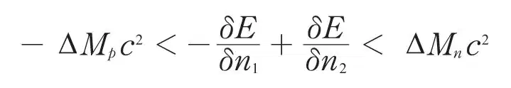
核相对电子发射可能是稳定的，这个条件对应于稳定性图（图1）中一条很窄的带（曲线II和曲线III）*，这与实验结果相矛盾。 英文
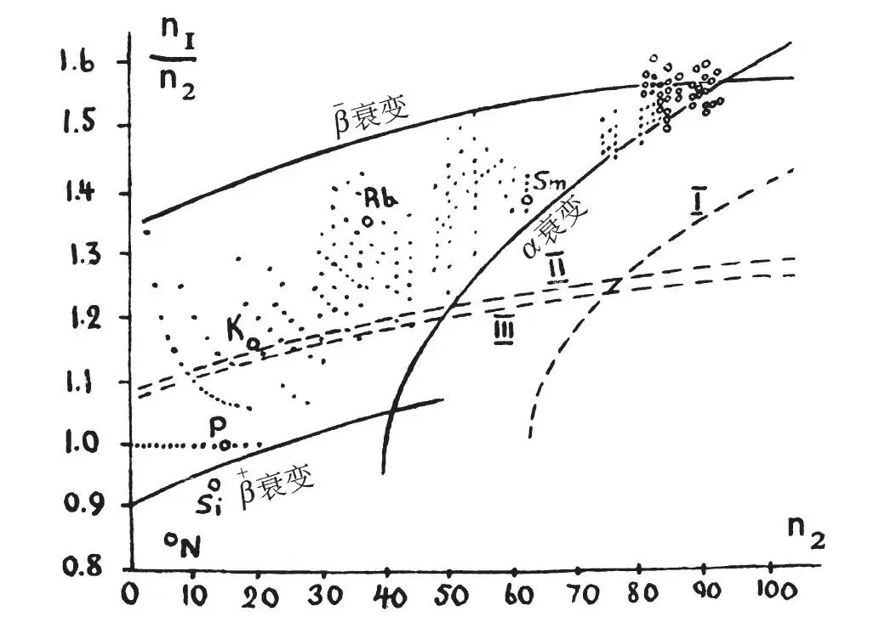
图1．所有已知原子核的图。稳定核用黑点表示，不稳定核用小圆圈表示。 英文
然而，如果我们进一步考虑与原子核的电子发射有关的能量条件，以上讨论的稳定区域可以变得更宽。问题在于对一个给定的中子和质子的总数（即对于给定的原子量），如果质子数是偶数（偶原子序数），那么原子核是相当稳定的。理由是，随着质子数的增加，每两个质子将导致一个新的α粒子的形成，从而释放更多的能量。因此如果我们画出同量异位核的结合能相对其原子序数的关系图（图2），则对应于偶数元素的点位于比奇数元素相应点更低的曲线上。如图所示，结果将是，对延伸到位于最小值两侧的一系列元素从能量角度上来看是不可能发射电子（不管是负电子或正电子）的。在这种情况下，只能认为两个电子同时发射。正如根据一般的理论估计的那样，这类成对电子发射的概率是很小的。但并不排除元素钾和铷的天然β放射性源于这类成对电子的发射过程，这也容易解释它们为何具有极长的寿命。 英文
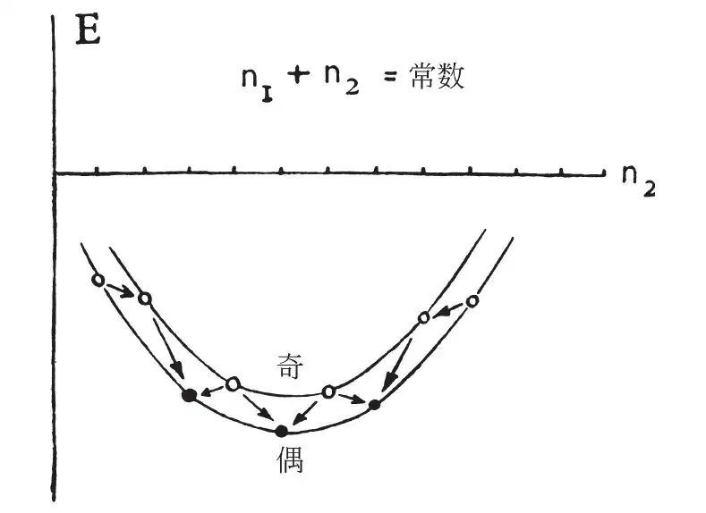
图2．典型的同量异位素核的质量亏损曲线。●稳定核；○不稳定核。 英文
根据以上的考虑，我们必须将
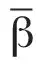
稳定性的极限向上推，而将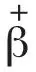
稳定性的极限向下推，从而得到相当宽的稳定性区域。由图1可见，尽管与α衰变的情况一样，曲线的位置仍然很低，但是理论的极限曲线对实际的稳定性极限形状有一个很好的认识作用。似乎以上两类差异都出于相同的原因。 英文
在图1中，对应的不稳定核用小圆圈表示。我们注意到，在重元素区域内α和β的稳定性曲线彼此很接近（可能有交叉），发生α衰变后紧接着两次β衰变的顺序是可能的。对于较轻的元素，目前我们只知道存在少数的自发衰变情况。如钐（极有可能是最轻的同位素）放出射程约为1.5cm的α粒子，且平均寿命约为1012年。而氮、硅和磷各自最轻的同位素
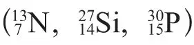
在自然界中不存在，而是由约里奥夫妇利用α粒子分别轰击硼、镁和铝人工产生的，这些人工同位素放出能量为1～2兆电子伏，寿命约为几分钟的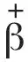
粒子。 英文
钾和铷的
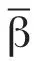
发射一定也可以解释成要么是它们较重的同位素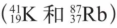
发生了双电子发射，要么是源于上述元素（可能来自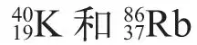
）非常短射程的α粒子发射的一些氯和溴的未知同位素。根据相应的衰变常数进行理论计算，可以得到它们在空气中的射程分别为0.24 cm和0.63 cm，这样我们就可以理解为何α粒子尚未被探测到。这里我们看到，通常的理论推算与实验结果较好地符合了。 英文
我们现在将注意力转到α粒子和电子发射的详细过程以及衰变能量与平均寿命的关系上来。α粒子发射过程基于普通的薛定谔波动方程可以解释为，发射的α粒子的速度是小于光速的。格尼、康登他们与伽莫夫都曾独立地指出，α粒子衰变体的长寿命是由于从核中逃逸的α粒子必须穿过很高的势垒，而势垒的透射率极小，且随着衰变过程释放出能量的减小而迅速减小。理论导出以衰变常数λ作为α粒子速度v函数的公式：
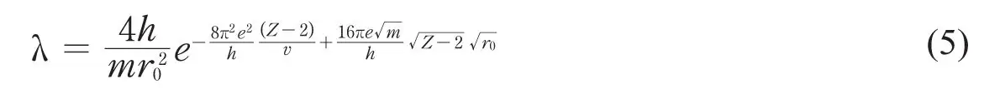
式中，Z是衰变元素的原子序数，r0是核半径。采用放射性元素的r0是在10–12 cm的量级，这使得λ的计算值与测量值得到很好的符合，而且可以在理论上解释由盖革和努塔耳得到的lgλ和v之间的经验关系式。 英文
然而，为了使理论和实验可以完全符合，我们必须采用以下观点，在核的密度保持恒定
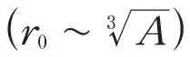
的条件下，不同元素之间的核半径r0是变化的。如果λ和v两个值中一个被测量，则通过式（5）我们可以估算出另一个值。例如，我们从式（5）估算得到镭C放出的α粒子的射程为4 cm，这很好地符合了卢瑟福后来得到的数值，而由该公式得到很短存活产物镭C′的寿命（10–3秒）与最近雅克布森的测量值也符合得很好。 英文
有趣的是我们还注意到，公式（5）也完全适用于较轻元素。根据（5）式，从钐放出的α粒子的速度可估算出钐的寿命约为1012年，与观测值非常一致。 英文
在α衰变过程中，衰变的产物的原子核通常总是处于激发态的，它对应于具有较小能量的α粒子群的发射（α射线的精细结构）。这个公式有助于我们理解这类α粒子群的相对强度，也允许我们确认核的不同激发能级的量子数。另一方面，这个公式也解释了少量的所谓长程α粒子群对应于激发态核的衰变。 英文
与α衰变理论相比较，理解β衰变过程存在严重的困难。首先，β衰变发射的电子具有连续的能量分布，这似乎与能量守恒定律相矛盾。玻尔曾指出，由于现代量子理论不适用于涉及核电子的过程，因此，能量守恒定律并不适用于该过程。但正如朗道所指出的，在广义引力理论中，某个闭合曲面中的质量完全是用该曲面上的重力场来定义的，违反能量守恒定律在广义引力理论中将会遇到非常严重的困难。泡利提出，我们可以通过引入称之为“中微子”的一类新粒子来保证能量守恒定律。这些中微子没有电荷，只有很小（甚至趋于零）的质量，实际上在所有的实验中都没有观测到它，但很可能就是它带走了β衰变多余的能量。但是，这类粒子存在与否目前尚存在争议。 英文
最近，费米尝试在狄拉克相对论波动方程的基础上构建一套β衰变的理论，类比原子的光量子发射方式来处理原子核的电子发射。在该理论中，人们接受这种观点，即原子核的一个中子转变成一个质子，伴随产生了一个电子和一个中微子，它们一旦产生就会离开原子核，并将这个转变过程中释放的能量在它们之间分配。对导致这类转变的相互作用，能量采用某个确定值（约为10–14 erg的量级），费米由此得到了β衰变元素合理的衰变常数的值，并与萨金特得到的β粒子的衰变常数和最大能量的关系曲线吻合得很好。 英文
然而，费米这套理论的一个有趣的结果是对β衰变给出了确定的不相容定则，这个结果是非常普遍的，适用于任何理论，即把电子发射认为是中子转变成质子的结果。按照这一定则，最初的原子核和产生具有不同自旋的那些原子核的β衰变过程并不都是允许的，且只能以较小的概率（约为自旋不变的转变概率的百分之一）发生。这立即解释了由萨金特获得的两条不同的曲线正是分别对应于允许转变和不允许转变。伽莫夫已指出，将上述的β衰变的不相容定则应用于分析放射族得到了很好的结果，并且允许我们给出放射性核正常态和激发态确定的自旋值。 英文
（沈乃澂 翻译；张焕乔 审稿）
* 从等式
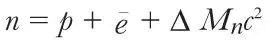
和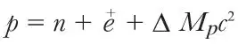
中，我们可得到∆ Mnc2 – (–∆ Mpc2) = ∆ Mnc2 + ∆ Mpc2 =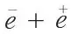
= 2mc2 = 1.6×10－6erg。在图1中由纵坐标上的一个约0.016单位稳定宽度范围所反映。